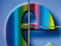

Detalji predavanja dostupni su odabirom dvorane, a odabirom naslova predavanja moguće je pojedino predavanje dodati u favorite.
Prikaz predavanja moguće je filtrirati prema favoritima ili prema aktivnim predavanjima. Popis predavanja na kojem su samo favoriti omogućen je odabirom oznake favoriziranih predavanja u gornjem desnom kutu. Aplikacija, također, omogućuje uklanjanje završenih predavanja s početnog ekrana odabirom navedene opcije u postavkama aplikacije.
EKONERG institut za energetiku i zaštitu okoliša
Odjel za informatiku
